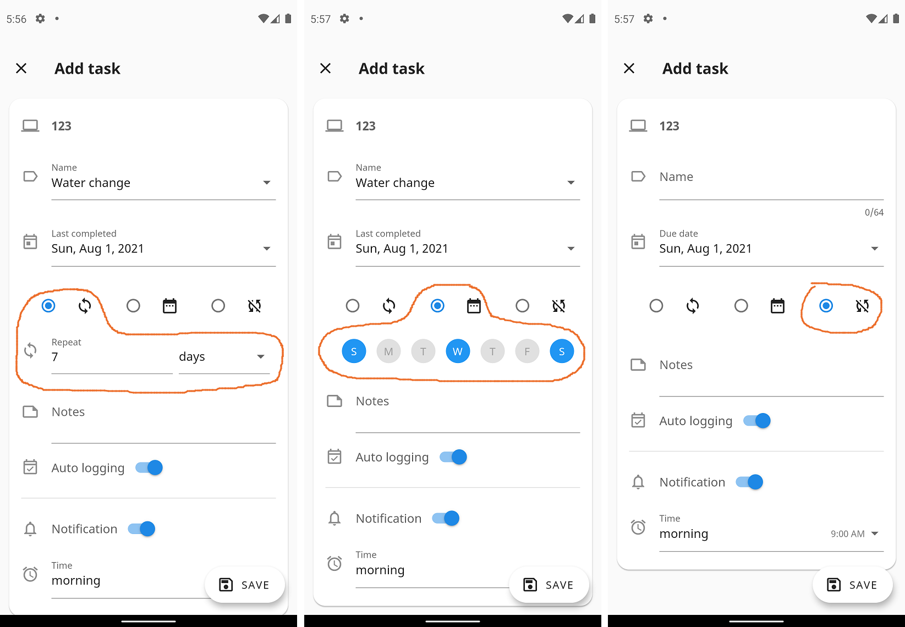
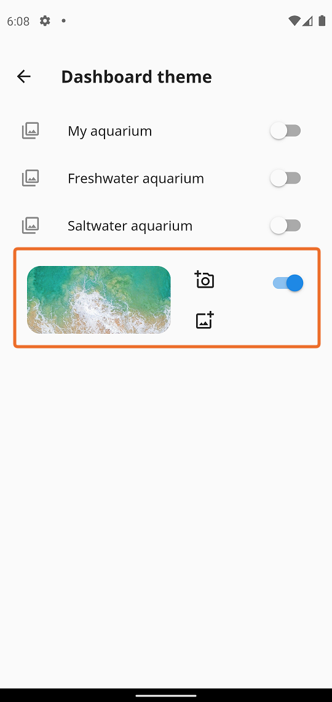

Version 2.0.8
Fix currency issue
New task repeat option

Version 2.0.7
New dashboard theme option.

Support Nederlands language
Support Português language
Support Español language
Support Pусский language
Support Deutsch language